Monday
The day begins with me attempting to do the Diamond Head trail in Oahu. Unfortunately it turns out I need a reservation. Thankfully that doesn’t stop me from getting this picture along the way
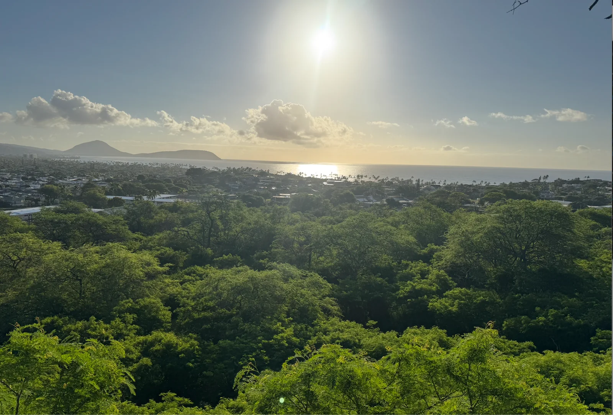
I then walk back and chill on the beach for a while. Along the way I get various food items. One thing I came to learn on this trip is that Hawaii food (or at least Waikiki food) is pretty mid compared to SF food. I try some tacos and they’re not much to talk about. Yesterday a friend told me that one of her friends is gonna be in Hawaii at the same time and she puts us in contact. We arrange to go on a hike together tomorrow.
As I’m chilling on the beach I debate what I might do for a standup set when I take my next class at SF Comedy College. I want to do something that I think is relatively unique (ie no dating stuff), and something that I think I would be uniquely qualified to cover. As I was thinking about this I thought to myself “if only I had an easy way of asking people what they thought”. And then I realized I could use this newsletter for crowd feedback. To that end I made a Google Form where I list the topics I’m currently thinking about and if y’all could vote for which ones you think would be interesting that would be appreciated!
Tuesday
Today starts off at the early morning time of 5:20AM with the aforementioned mutual friend. The hike in question is the Lanikai PillBox trail. One brutal Iesson I learn about myself on this hike is that I am very scared of climbing. The point of this hike was to try to see the sunrise which means climbing in near dark conditions with only our phone flashlight to guide us. This combined with climbing is enough to honestly terrify me. We make it up halfway through the first climb and both of us decide it may be for the best to turn back. As we are doing so we run into a group of locals who tell us that it gets easier from here. This combined with the fact that we have others around us gives us the courage to continue.
As we continue we realize that easier does not mean easy. The climbing is still annoying. My mind flashes back to a time last year when one of my friends takes me bouldering for the first time. I remember just how bad I was at the sport having barely managed to do a V0.
Slowly but surely I manage to get myself over this climb and make it to the top.
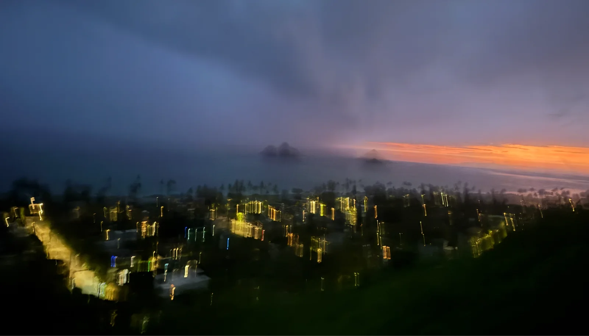
A blurry pic which I think captures what I was feeling on the inside
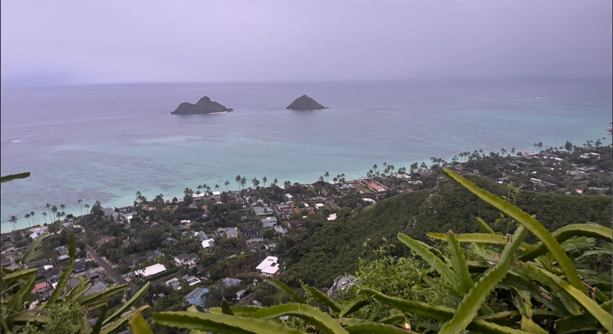
To be honest I think the view was good but not amazing especially considering what I had to do for it. But even still it was a feeling of accomplishment so I’ll take it.
Thankfully the climb down wasn’t too bad (although I did go nice and slow). Afterwards we went to the beach nearby and chilled for a while. After getting brunch nearby we then head back to Waikiki. From there I go back to my hotel and chill for a bit and then take a break from that to go to the beach and chill.
Wednesday
Today I actually do Diamond Head and it winds up being quite nice!
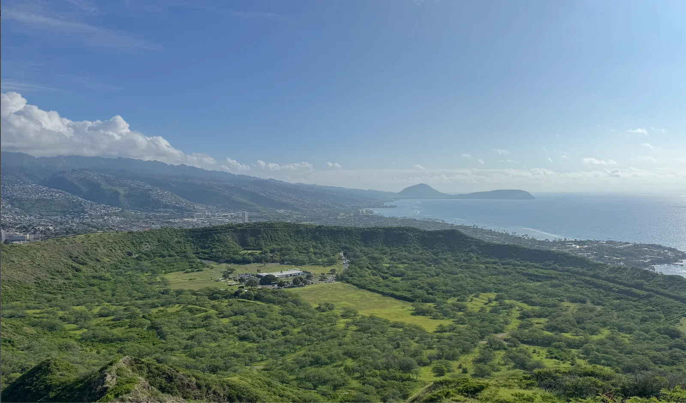
The hike itself is pretty easy as there isn’t any scary climbing involved. Afterwards I go and chill on the beach.
Thursday
Today I change things up and chill on the beach in the morning and then do my activity in the afternoon. For todays activity, me and the mutual friend did a surf lesson. I’d only been surfing one time in the past and it ended with me cutting my foot on the fin of the board leaving a scar. My goal for today was to not have that happen again. While that did happen the surf lesson still didn’t go great. I think this message sums it up quite well
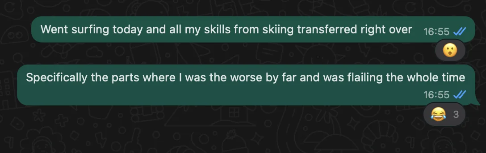
I had a really hard time learning how to stand on the board without falling. It was a non stop barrage of me falling in the water over and over. I think the worst part was the fact that my mouth tasted really salty after a while. That being said it was still a fun experience and I’m glad I did it but I’m nowhere near a surf aficionado.
I strike up conversation with my surf instructor at one point who tells me that he moved out to Hawaii specifically to surf. He appreciates the fact that Hawaii is a very down to earth place which I could definitely tell. He mentioned moving from LA which was very evidently not that. While SF isn’t as bad as LA it is nice to be in a place where people just seem like they are enjoying life and living in the moment as opposed to always thinking about the future (and of course tech).
Ultamitely after having been here for a while I do think that given my current life goals Hawaii isn’t really right for me along with the fact that I think I would get bored if I was here for too long but the change of scenery is definitely appreciated!
Friday
Today me and the mutual friend went snorkeling over in Hanuma bay which was super nice!
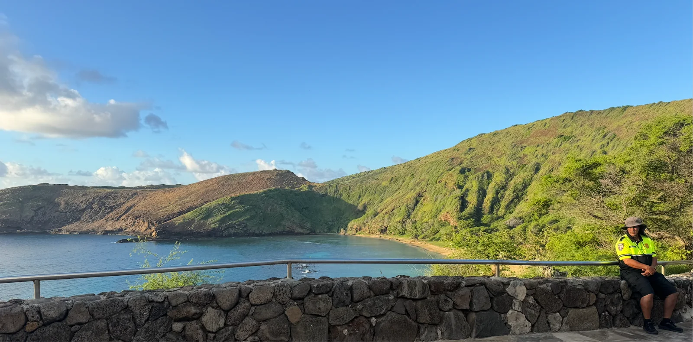
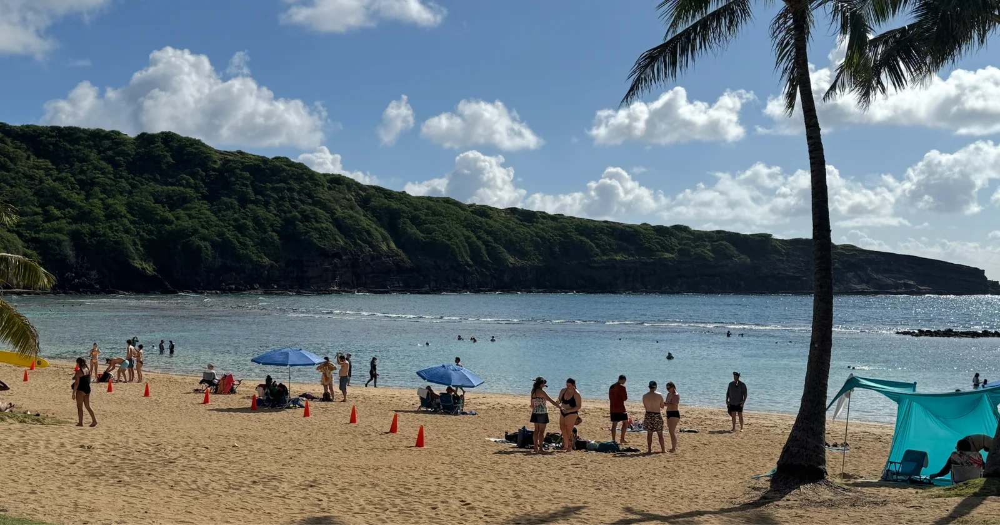
I got to see a whole lot of different fish. Unfortunately I didn’t get one of those waterproof bags for my phone so I couldn’t take any pictures but trust me when I say they were absolutely gorgeous!
After snorkeling we decide to go hiking and do the Koko Crater Trailhead hike. I think this hike has the record for the most stairs I’ve ever done on a hike.
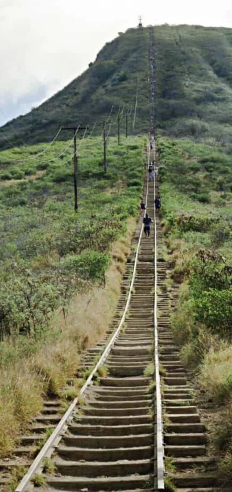
Since this hike just involved steps and no climbing I thought it would be easy. Boy was I wrong. These stairs were some of the toughest I ever climbed. The fact that it was 85 degrees out and humid didn’t help either. While I was able to chug along it did definitely take more out of me than I was planning. I did make it harder on myself by speedwalking up the stairs in all fairness but still though ti was tough. Little did I know the toughest part was yet to come. About halfway up we get to this
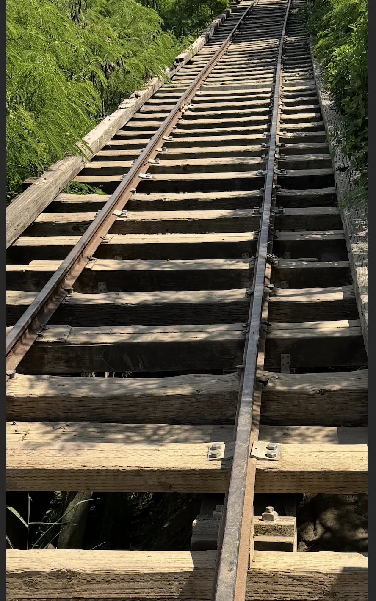
In case its not clear from the photo above we get to some tracks whose gap between them is bigger than my foot. When I step onto them I almost fall down. At this point my fear of climbing takes hold again and I find the prospect of moving forward to be incredibly daunting. My friend and I both decide that we’re not really gonna do this and just walk down instead.
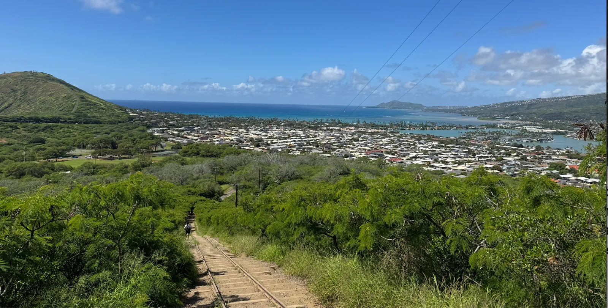
Thankfully we still get some nice views for making it half way. I told my friend that I may try to do this hike again on Sunday so it will look slightly better when I write it for the newsletter but unfortunately that doesn’t happen so I’m left with just my failure. Sad times!
After going back to the hotel and crashing I meetup again with my friend to go see some fireworks which are pretty nice.
Saturday
Today is a pretty chill day. Just hanging out by the beach and go swimming. I do feel a bit of FOMO today realizing I missed trash pickup. I follow along vicariously to see who went today and I’m glad South Mission still had a good number of people. Today I discovered that there is a Lawsons here in Honolulu. For those unaware, Lawsons is a Japanese convenience store brand that has a lot of really good and cheap food. Seeing one here stateside was quite the unexpected surprise and it felt like being in Japan again.
Sunday
Today is once again just a chill day. But a very appreciated one! Looking back a lot of my previous trips involve me always doing things so its nice to not do that for once and just appreciate the beauty around me and swim in the water like I’m a kid again. Before this trip I hadn’t really swam much since I was a kid taking swimming lessons and I felt a lot of nostalgia for my carefree summers not really doing much other than having fun. I decide to see just how much lazier I was compared to my trip to Japan by looking at my weekly step count
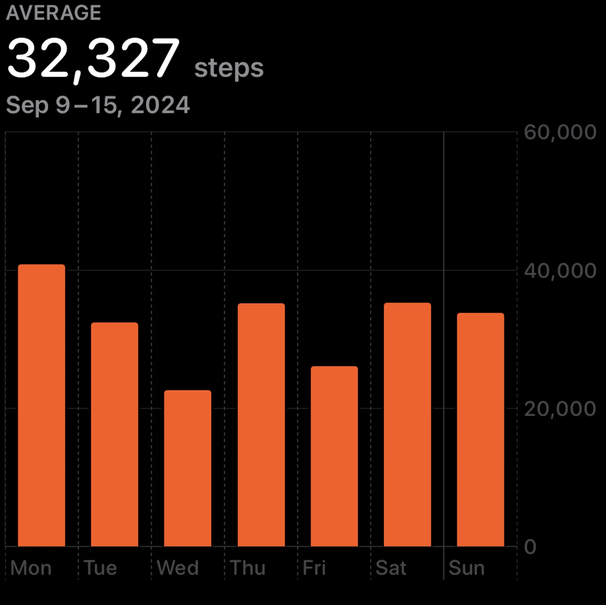
Japan
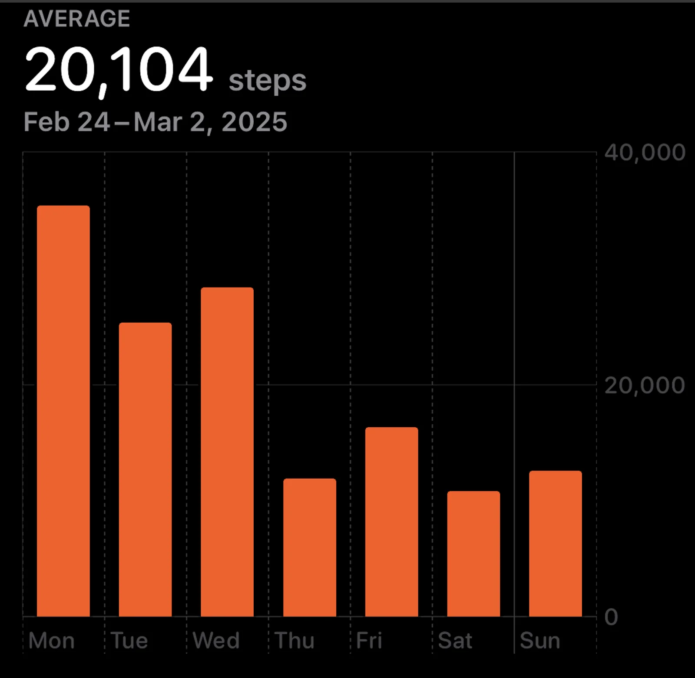
Hawaii
Definitely a difference! But like I said this was a different kinda fun which is appreciated. Finally I go back to my hotel and write up the newsletter.